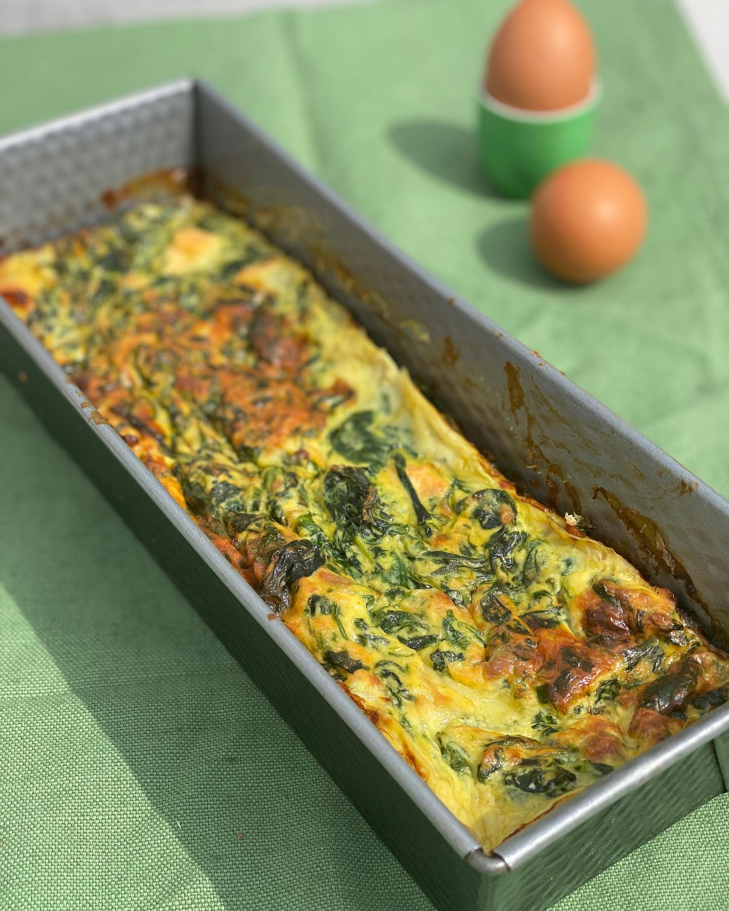

Špenátový nákyp podľa @lowcarb_pro_vsechny — Normy Jedál
🥬ŠPENÁTOVÝ NÁKYP🥬 🥚5 vajec
🥚špenát (dala jsem půl čerstvého/půl mraženého - prostě co je doma 🤷🏽♀️)
🥚1 balení uzeného lososa
🥚250 g ricotty 🥚1 mozarellu
🥚česnek
🥚psyllium
Sůl, máslo na vymazání
Spařím/uvařím šprnát, přidám česnek. V míse rozkvedlám vejce, přidám psyllium a ricottu a míchám metličkou. Přidám nakrájeného uzeného lososa a špenát. Všechno promíchám a buď přidám nastrouhanou mozarellu (bez nálevu) přímo do těsta nebo nastrouhám na těsto při zapékání (přisypu ale až budou mít vejce tužší konzistenci). Do máslem vymazané formy naliji těsto a dám zapéct.
#lowcarbprovsechny #lowcarb #nizkosacharidovastrava #nizkosacharidovestravovani #lowcarbdiet #lowcarbeating #fit #spinach #spenatovynakyp